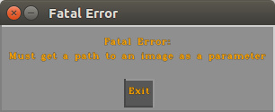

OpenCV examples and tutorials make heavy use of the console to commuincate with the user.
To start using the GUI instead of the console the first thing you need is to get to know the canvascv::Canvas class.
Introducing the CanvasCV class
The Canvas class is associated with an OpenCV window and it gives you another virtual layer on top of your displayed Mat.
This canvas class encapsulates a lot of work for you, so you can focus on the CV. It also handles key presses and mouse events.
The basic flow is:
- Define a Canvas for a window of a specific size, usually to match the image you're displayng.
Canvas c("winName", frame.size());
- Create an OpenCV window without resizing so the widgets cannot be stretched
namedWindow("winName", WINDOW_AUTOSIZE);
- Let the CanvasCV handle your mouse events
- Create your widget on the Canvas (or in a frame/layout) for example:
auto msgBox = MsgBox::create(c, "Do you really want to do that?", {"Yes", "No"});
- Redraw on your frame/image in your regular OpenCV loop, as in:
int delay = 1000/25;
int key = -1;
Mat out;
while (true)
{
}
Some real use cases
Exiting on fatal errors
Your application/utility might need command line arguments, or cannot continue for some reason.
A simple write to the console before exiting is usually not enough to get the user attention.
For these simple cases you have a simple shortcut in canvascv::Canvas::fatal():
#include <canvascv/canvas.h>
int main(int argc, char **argv)
{
--argc;
++argv;
if (! argc)
{
Canvas::fatal(
"Must get a path to an image as a parameter" , -1);
}
return 0;
}
which, besides an output to STDERR, gives you:

Displaying user text in a fixed location
Instead of displaying the help message or any other fixed text to the console use the canvascv::Canvas::enableScreenText() and canvaccv::Canvas::setScreenText(string) methods.
This flow is a little closer to the regular usage of the Canvas, but you don't need to create a widget of your own.
Adding to the previous example (we want to display this on an image):
#include <canvascv/canvas.h>
{
static bool showHelp = true;
static string helpMsg =
"Usage:\n"
"=====\n"
"h: toggle usage message\n"
"*: toggle canvas on/off\n"
"q: exit";
showHelp = ! showHelp;
}
int main(int argc, char **argv)
{
--argc;
++argv;
if (! argc)
{
Canvas::fatal(
"Must get a path to an image as a parameter" , -1);
}
Mat image = imread(argv[0]);
if (image.empty())
{
}
Canvas c(
"Canvas", image.size());
help(c);
namedWindow("Canvas", WINDOW_AUTOSIZE);
int key = 0;
Mat out;
do
{
switch (key)
{
case 'h':
help(c);
break;
case '*':
break;
}
imshow("Canvas", out);
} while (key != 'q');
destroyAllWindows();
return 0;
}
Some notes here:
Displaying text where ever you want
To display text where you want you need the canvascv::Text widget.
You can create position it on the Canvas at any XY location.
Add these lines to the previous example, after creating the namedWindow():
txt->setFontHeight(50);
txt->setThickness(2);
txt->setLocation({30, image.rows / 2 - 15});
Notes:
That's all for this tutorial
 1.8.11
1.8.11